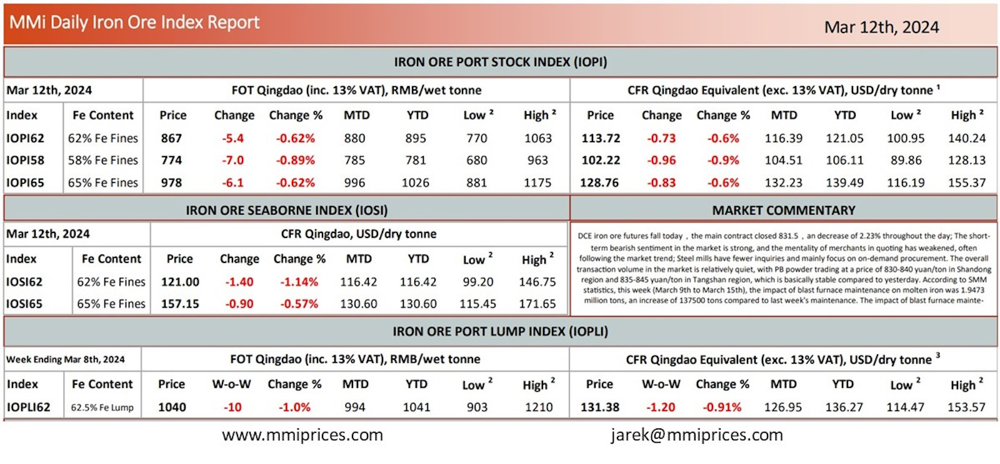

DCE iron ore futures fall today，the main contract closed 831.5，an decrease of 2.23% throughout the day;The shortterm bearish sentiment in the market is strong, and the mentality of merchants in quoting has weakened, often following the market trend; Steel mills have fewer inquiries and mainly focus on on-demand procurement. The overall transaction volume in the market is relatively quiet, with PB powder trading at a price of 830-840 yuan/ton in Shandong region and 835-845 yuan/ton in Tangshan region, which is basically stable compared to yesterday. According to SMM statistics, this week (March 9th to March 15th), the impact of blast furnace maintenance on molten iron was 1.9473 million tons, an increase of 137500 tons compared to last week’s maintenance. The impact of blast furnace mainte.

Source: Metals Market Index (MMi)